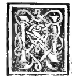

CAPITEL LV¶
Von dem Verfahren, um ausser den genannten Körpern deren mehr zu bilden und wie ihre Formen ins Unendliche fort- schreiten.

Es scheint mir, erhabener Herzog, nicht, mich weiter über die genannten Körper zu verbreiten, sofern ihr Fortgang sich bei fortgesetzter und successiver, allmählicher Beschneidung seiner Ecken bis ins Unendliche erstreckt, und jener gemäss ihre verschiedenen Formen sich vervielfältigen. Und dieselben werden sie, da der Weg nach dem vorher Gesagten dazu offen steht, aus sich schon als weiter verfolgbar annehmen, weil stets gesagt wird, dass es leicht ist, den Erfindungen zuzusetzen. Es ist nicht schwer, zu den gefundenen Dingen Etwas zuzulegen und deswegen wird das mehr oder weniger Fortnehmen oder Hinzufügen zu den vorher Genannten für jeden Zweck leicht sein.
Und dies haben wir bis jetzt allein darum verfolgt, um zu zeigen, wie von jenen fünf regulären ihre Eigenthümlichkeit in den andern von ihnen abhängigen sich stets destillirt, nach Art der fünf einfachen Stoffe, welche zur Bildung jedes zusammengesetzten Erzeugnisses beitragen. Aus diesem Grunde ward (wie oben erwähnt) Plato gezwungen, die vorerwähnten fünf regelmässigen Körperforraen den fünf einfachen Stoffen, nämlich Erde, Luft, Wasser, Feuer und Himmel zuzuschreiben, wie weitläufig aus seinem Timäus erhellt, wo er von der Natur des Universums handelt.
Und dem Elemente der Erde schrieb er die kubische Form, d. h. die des Hexaeders zu, sofern bei der Bewegung keine andere Figur grösserer Stosskraft bedarf, und unter allen Elementen kein festeres, beharrlicheres und dauerhafteres sich findet als die Erde. Und die des Tetraeders theilte er dem Elemente des Feuers zu, weil es bei seinem Aufflackern die Pyramidentorm erzeugt, wie es gleicherart unser Feuer dem Auge offenbart, weil wir es am Boden und in der Tiefe breit und gleichförmig stets nach oben abnehmen sehen, so dass die Spitze seiner Flamme in einem Punkte endet, wie es die Spitze Jeder Pyramide thut. Die Form des Oktaeders schrieb er der Luft zu.
Denn wie die Luft bezuglich einer kleinen Bewegung dem Feuer folgt, so folgt auch der pyramidalen Form mit Bezug auf ihre Bewegungsfähigkeit die Form des Oktaeders. Und die Figur des Zwanzigfiächners, d. h. des Ikosaeders mass er dem Wasser bei. Denn sofern sie von mehr Grenzflächen umgeben, als irgend eine der andern, so schien es ihm, dass sie schneller in die Kugel überginge bei der Bewegung des Stoffs, der verstreut herabfällt, als bei der, jenes welcher aufsteigt. Und die Form des pentagonischen Zwölfflächners schrieb er dem Himmel zu, als dem, welcher der Aufnahmeort aller Dinge ist.
Aehnlicherart ist dies Dodekaeder Aufnahmsort und Herberge aller andern vier regelmässigen Körper, wie aus ihrer gegenseitigen Einbeschreibung hervorgeht. Und ausserdem noch wie Alkinom über den Timäus Plato’s sagt: Denn, wie am Himmel zwölf Zeichen in seinem Zodiacus sind und jedes von ihnen sich in 30 gleiche Theile theilt, so dass seine ganze jährliche Umdrehung 36o beträgt, ebenso hat dieses Dodekaeder in sich zwölf pentagonische Grundflächen, von denen jede in fünf Dreiecke aufgelöst wird, indem man den Mittelpunkt festhält, und jedes Dreieck in sechs Streifen zerlegt, was in jeder Grundfläche 30 Triangel für je eine ergibt, so dass deren bei allen 36o, wie beim genannten Zodiacus vorhanden.
Und eben diese Formen sind von dem hochberühmten Philosophen Calcidius, indem er den besagten Timäus auseinandersetzt, sehr empfohlen. Und ebenso von Macrobius, Aquilejus und sehr vielen andern, denn sie sind in der That aller Empfehlung werth, aus den Gründen, welche bei ihrer Herstellung angeführt werden; indem das Genügen der genannten fünf Formen dargethan wurde.
Wie die Anzahl genannter einfacher Stoffe in der Natur sich nicht vermehren kann, ebenso ist es nicht möglich, von diesen fünf regulären Körpern mehr aufzustellen, die von gleichen Seiten, Winkeln und Grenzflächen sind, und von deren Ecken, wenn sie in die Kugel gestellt, dieselben, sobald eine sie berührt, sämmtlich diese berühren, denn könnte in der Natur ein sechster einfacher Stoff ermittelt werden, so würde der höchste Schöpfer in seinen Schöpfungen verkleinert worden sein, und ohne Klugheit darüber zu urtheilen, indem er nicht von Anfang an alles für sie Nothwendige, Angemessene erkannt hätte.
Und ich verstehe, dass gewiss hierdurch und nicht durch etwas Anderes Plato veranlasst, diese, wie gesagt, jedem der genannten einfachen Stoffe zuzuschreiben, der als sehr guter Geometer und sehr tiefer Mathematiker so argumentirte. Indem er sah, dass bezüglich der fünf verschiedenen Formen derselben auf keine Art irgend eine andere sich denken oder bilden lasse, welche bei gleichen Seiten, Grundflächen und Winkeln dem kugelförmigen, wie gesagt, zustrebt, wie aus der vorletzten des Dreizehnten sich zeigt und von uns gelegentlich angeführt, schloss er ‘nicht ohne Verdienst, dass die Genannten den fünf Einfachen zukämen, und dass von diesen jede andere Form abhinge.
Und obwohl diese fünf allein als regelmässige bezeichnet werden, wird trotzdem die Kugel nicht ausgeschlossen, sofern sie vor allen andern am regelraässigsten ist; und jede andere ergibt sich aus ihr wie aus der höchsten Ursache der Ursachen: und in ihr ist keinerlei Verschiedenheit, sondern durchweg Gleichförmigkeit, und an jeder Stelle hat sie ihren Anfang und ihr Ende, ihre Rechte und Linke. Woher ihre Form entsteht, werden wir hier im Folgenden die genannten abhängigen abschliessend, sagen, und sodann der Reihe nach von allen andern oblongen, d. h. den Körpern, die mehr lang als breit sind.
Marginal Woodcut Diagrams (Paganini 1509)¶

Folio 0049 Diagram 1¶